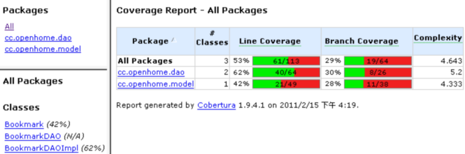
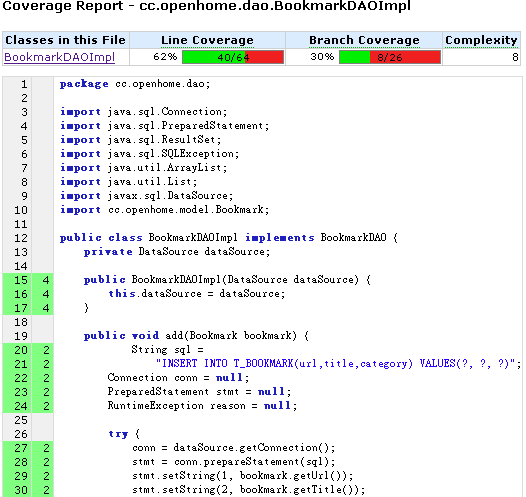
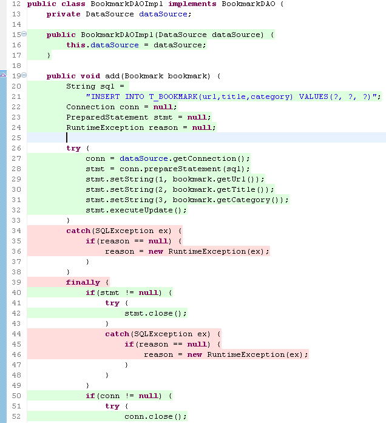

在進行測試時，你預期方法呼叫後的傳回值或該有的結果，藉以了解在傳入某參數或物件某狀態下，方法執行的結果是否正確，通常這是你所需要的，在這樣的情況下，執行的測試是接近所謂黑箱（Block box）測試。
然而程式實際撰寫時，並非只有輸入、狀態、傳回值、執行結果，方法的演算中會有其它要考慮的部份，像是分支判斷、例外等，理想的情況下，測試必須涵蓋每條流程、每行程式碼，了解程式碼運行是否正常或正確，這時你進行的，是接近於所謂白箱（White box）測試。
然而就算你針對演算流程進行了測試，單憑肉眼或腦袋，很難計算出測試覆蓋率（Test coverage），因而有著一些工具，可以協助進行評估。
Coberture 是個評估測試覆蓋率的工具，它針對.class進行修改，於運行時評估運行的程式碼與次數，提供測試覆蓋率數據，並可產生文件作為參考。
在這邊先示範文字模式下的指令，了解Coberture的基本操作，這邊以 資料庫單元測試 中的例子為對象。假設專案中...
- lib：放置jar檔
- src：放置原始碼
- bin：放置編譯好的類別
- instrumented：放置Coberture修改後的類別
- reports：放置測試報告
首先確定你的PATH中包括了Coberture的目錄，接著執行以下的指令：
cobertura-instrument --destination instrumented bin\cc\openhome
這會將cc\openhome資料夾下包括子資料夾中所有.class讀入修改，修改後的.class會放至instrumented資料夾中，並產生一個cobertura.ser的檔案，這個檔案記錄了原有類別的一些資訊。接著執行以下指令：
java -cp lib\mysql-connector-java-5.1.7-bin.jar;lib\junit-4.8.2.jar;
lib\cobertura.jar;instrumented;bin
-Dnet.sourceforge.cobertura.datafile=cobertura.ser
org.junit.runner.JUnitCore test.cc.openhome.BookmarkDAOImplTest
lib\cobertura.jar;instrumented;bin
-Dnet.sourceforge.cobertura.datafile=cobertura.ser
org.junit.runner.JUnitCore test.cc.openhome.BookmarkDAOImplTest
注意，這些指令是連在一起不換行的。這會使用運行測試，並產生報告來更新cobertura.ser檔案中的資訊，接著可以執行以下的指令產生報表：
cobertura-report --format html --datafile cobertura.ser --destination reports src
產生的報告如下圖：

點選每個類別，可以看到此次測試的每行程式碼執行次數：

在Eclipse IDE中，可以安裝 eCobertura ，接著只要在測試類別時執行「Cover as/JUnit Test」，就會以不同顏色顯示有執行與未執行的程式碼。例如：
